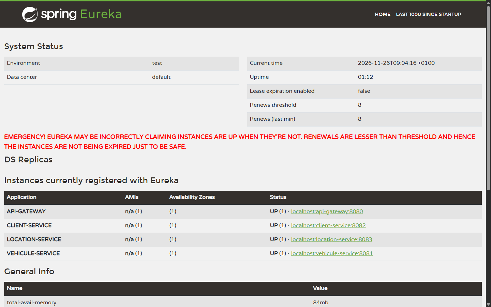
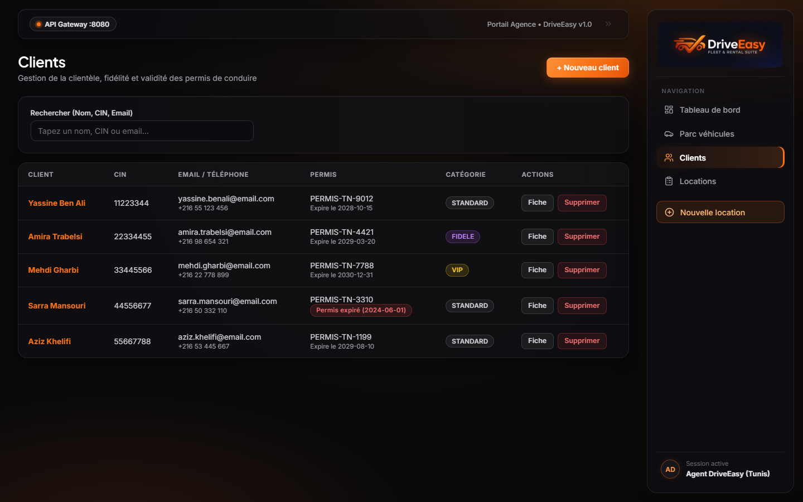
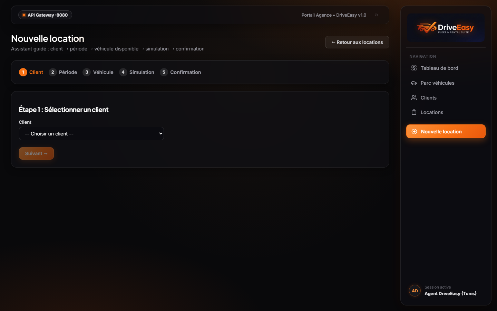

Figure 4 — Tableau de bord Eureka (instances enregistrées UP)
Figure 5 — Trace distribuée Zipkin et analyse des temps de réponse
Figure 6 — Frontend : Tableau de bord (/dashboard)
Figure 7 — Frontend : Catalogue des véhicules (/vehicules)
Figure 8 — Frontend : Liste des clients (/clients)
Figure 9 — Frontend : Liste des locations (/locations)
Figure 10 — Frontend : Assistant Nouvelle location (/locations/new)
Figure 11 — Frontend : Retour de véhicule (/locations/:id/retour)
Table des tableaux
Tableau 1 — Choix techniques et justifications
Tableau 2 — Composants de l'architecture, ports et rôles
Tableau 3 — Endpoints REST exposés par les 3 microservices
Tableau 4 — Routes, guard et composants de l'application Angular 22
1. Introduction et contexte
La société DriveEasy, spécialisée dans la location de voitures de courte et moyenne durée, souhaite remplacer son application monolithique vieillissante par une plateforme moderne, modulaire, scalable et maintenable.
Problématique : Comment découper la gestion du parc automobile, des clients et du cycle de vie des locations en services indépendants tout en garantissant un point d'entrée unique, une configuration centralisée, la tolérance aux pannes et l'observabilité des appels distribués ?
Périmètre & objectifs métier
Gérer le parc automobile (catégories, statut, kilométrage, tarifs).
Gérer les clients, l'éligibilité (âge ≥ 21 ans, permis valide) et la fidélité (STANDARD, FIDELE, VIP).
Piloter les locations : simulation, réservation, départ, retour avec pénalités, annulation.
Fournir des indicateurs (taux d'occupation, chiffre d'affaires, top véhicules).
Objectifs pédagogiques
Mettre en œuvre Spring Cloud (Eureka, Config Server, API Gateway).
Orchestrer la communication synchrone via RestClient + compensation.
Assurer le traçage distribué avec Zipkin sous Docker.
Réaliser une interface Angular 22 consommant uniquement la Gateway.
2. Analyse et conception
2.1 Acteurs, besoins fonctionnels et non fonctionnels
Acteur principal :L'agent d'agence. Il utilise le portail Angular 22 pour gérer le parc, enregistrer les clients, vérifier leur éligibilité et exécuter tout le cycle de location.
Besoins fonctionnels : CRUD véhicules avec filtres et disponibilité ; CRUD clients avec unicité (CIN, email, permis) et contrôle d'éligibilité ; simulation de tarif avec remises fidélité (5 % FIDELE, 10 % VIP) ; cycle de location (RESERVEE → EN_COURS → TERMINEE / ANNULEE) avec calcul automatique des pénalités de retard (1,5 × prixJournalier / jour) et statistiques temps réel.
Besoins non fonctionnels : Découplage strict des données (stockage en mémoire vive ConcurrentHashMap par microservice, aucune base de données externe) ; point d'entrée unique via l'API Gateway ; traçage distribué à 100 % sur Zipkin ; gestion centralisée des erreurs HTTP (400, 404, 409, 500).
2.2 Diagramme de cas d'utilisation
Figure 1 : Diagramme de cas d'utilisation — Interactions de l'agent d'agence avec DriveEasy.
2.3 Diagrammes de classes par microservice
Figure 2 : Diagrammes de classes des 3 microservices métier (modèles isolés par service).
2.4 Choix techniques
Technologie
Rôle dans le projet
Justification
Java 21 & Spring Boot 3.4.5
Socle des 6 modules backend
Support LTS, records Java pour les DTOs, validation Jakarta (@Valid) et Actuator intégré.
Spring Cloud 2024.0.1
Eureka, Config, Gateway
Écosystème natif pour la découverte dynamique, la configuration externalisée et le routage lb://.
ConcurrentHashMap (RAM)
Stockage sans base de données
Respect strict du cahier des charges, accès thread-safe et séparation des données par microservice.
Zipkin (Docker)
Traçage distribué
Déploiement rapide via docker-compose.yml, visualisation des appels Gateway → Services.
Angular 22 (Standalone)
Frontend agent d'agence
Architecture légère sans NgModule, signaux réactifs, lazy loading et typage strict TypeScript.
Tableau 1 : Choix techniques et justifications.
3. Architecture globale
Le frontend Angular (:4200) ne communique jamais directement avec les microservices : toutes ses requêtes passent par l'API Gateway (:8080), qui interroge Eureka (:8761) pour équilibrer la charge vers les services métier.
Figure 3 : Architecture globale et flux de communication DriveEasy.
Composant
Port
Rôle et dépendances
service-registry
8761
Serveur Eureka : annuaire des services (démarré en 1er).
config-server
8888
Fournit les fichiers YAML centralisés (démarré en 2e, avant les clients).
vehicule-service
8081
Gestion du parc automobile et disponibilités (dépend d'Eureka & Config).
client-service
8082
Gestion clients, éligibilité & fidélité (appelle location-service avant suppression).
location-service
8083
Cycle de vie locations (appelle client-service et vehicule-service via RestClient).
api-gateway
8080
Point d'entrée unique, CORS (localhost:4200), StripPrefix=1, LoggingGlobalFilter.
zipkin (Docker)
9411
Collecte des traces HTTP envoyées par tous les services (/api/v2/spans).
4. Réalisation Backend (Spring Boot / Spring Cloud)
4.1 Service Registry (Eureka) et Config Server
service-registry expose le tableau de bord Eureka sur le port 8761 avec register-with-eureka: false. config-server (8888) centralise application.yml (paramètres Eureka, Actuator, Zipkin) et les fichiers spécifiques par service et profil (dev, prod).
// ServiceRegistryApplication.java — Point d'entrée Eureka Server
@SpringBootApplication
@EnableEurekaServer
public class ServiceRegistryApplication {
public static void main(String[] args) {
SpringApplication.run(ServiceRegistryApplication.class, args);
}
}
4.2 Microservices métier & communication inter-services
Chaque microservice suit l'architecture Controller → Repository, avec validation @Valid et gestion globale des erreurs via @RestControllerAdvice. location-service utilise RestClient configuré avec @LoadBalanced et gère la cohérence par compensation en cas d'échec lors du départ ou du retour :
// LocationController.java — Passage à LOUE avec compensation en cas d'erreur
updateVehiculeStatut(location.getVehiculeId(), "LOUE", null);
try {
location.setKmDepart(((Number) vehicule.getOrDefault("kilometrage", location.getKmDepart())).intValue());
location.setStatut(StatutLocation.EN_COURS);
return LocationResponse.fromEntity(repository.save(location));
} catch (Exception ex) {
updateVehiculeStatutSafe(location.getVehiculeId(), "DISPONIBLE", null); // Rollback statut
throw ex;
}
Service
Endpoints principaux exposés
vehicule-service
GET/POST /vehicules, GET/PUT/DELETE /vehicules/{id}, PATCH /vehicules/{id}/statut, GET /vehicules/disponibles
client-service
GET/POST /clients, GET/PUT/DELETE /clients/{id}, GET /clients/{id}/eligibilite, PATCH /clients/{id}/categorie
location-service
GET/POST /locations, POST /locations/simulation, PATCH /locations/{id}/depart|retour|annulation, GET /locations/statistiques
Tableau 3 : Endpoints REST exposés par les 3 microservices.
4.3 API Gateway & Monitoring Zipkin (Docker)
# config-repo/api-gateway.yml — Routage dynamique et CORS
routes:
- id: vehicule-service
uri: lb://vehicule-service
predicates: [ Path=/api/vehicules/** ]
filters: [ StripPrefix=1 ]
# docker-compose.yml — Zipkin conteneurisé sur le port 9411
services:
zipkin:
image: openzipkin/zipkin:latest
ports: [ "9411:9411" ]

Figure 4 : Tableau de bord Eureka montrant les 4 services enregistrés (API-GATEWAY, CLIENT-SERVICE, LOCATION-SERVICE, VEHICULE-SERVICE).
Figure 5 : Trace Zipkin — Visualisation du temps de réponse (quelques millisecondes en local grâce au stockage RAM).
5. Réalisation Frontend (Angular 22 — Bonus)
L'interface Angular 22 repose sur des composants standalone organisés en src/app/core/ (modèles, 3 services HTTP pointant vers http://localhost:8080/api/..., agencyAuthGuard, apiErrorInterceptor) et src/app/features/ (tableaux de bord, véhicules, clients, locations).
Route
Composant (Lazy-loaded)
Rôle principal
/dashboard
DashboardComponent
Indicateurs du parc, chiffre d'affaires et graphiques
/vehicules, /vehicules/new, :id/edit
VehiculeList / VehiculeForm
Catalogue filtrable, tri, pagination et formulaire réactif
/clients, /clients/:id
ClientList / ClientDetail
Recherche, badges fidélité, alerte permis expiré et fiche
/locations, /new, :id/retour
LocationList / Wizard / Retour
Cycle complet, assistant 5 étapes, calcul pénalités et bon imprimable
Tableau 4 : Routage et composants de l'application Angular 22 (protégés par agencyAuthGuard).
Figure 6 : Tableau de bord (/dashboard) — Taux d'occupation, chiffre d'affaires et top véhicules.
Figure 7 : Catalogue des véhicules (/vehicules) — Grille avec filtres, tri et pagination.

Figure 8 : Liste des clients (/clients) — Recherche, badges de fidélité et alerte permis expiré.
Figure 9 : Liste des locations (/locations) — Actions Départ / Retour / Annulation.

Figure 10 : Assistant de création d'une location (/locations/new) en 5 étapes avec simulation.
Figure 11 : Retour de véhicule (/locations/:id/retour) — Calcul des pénalités et récapitulatif imprimable.
6. Conclusion et perspectives
Ce projet a permis de concevoir et réaliser une architecture microservices complète sous Spring Boot 3.4 / Spring Cloud (Eureka, Config Server, API Gateway, Zipkin) associée à un frontend Angular 22 moderne. Toutes les règles de gestion demandées sont opérationnelles.
Limites et améliorations : Le stockage en RAM (ConcurrentHashMap) réinitialise les données au redémarrage. Les évolutions naturelles consistent à intégrer une base PostgreSQL par microservice, une authentification JWT (Keycloak / Spring Security) et une suite de tests unitaires/d'intégration automatisés.